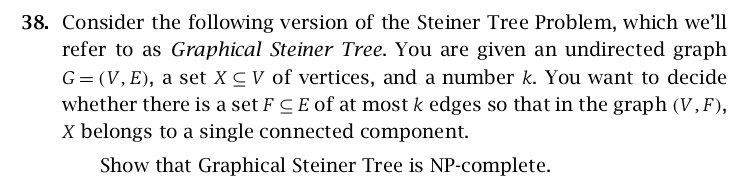
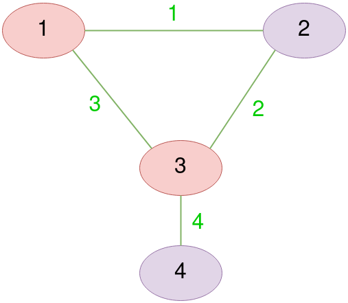
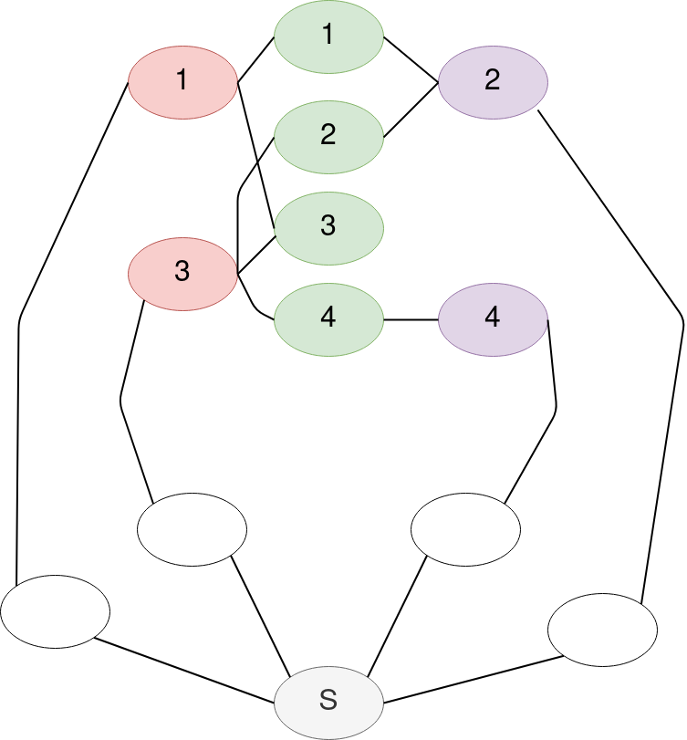

Proving Graphical Steiner Tree is NP-Complete
Yet, Another NP-Complete Problem. Kleinberg and Tardos’ exercise 38 of their algorithm design book
Preface
We prove the graphical steiner tree problem is NP-complete by reducing vertex cover to it. The version of it is taken from our favorite Kleinberg and Tardos’ Algorithm Design book’s exercises. We assume the reader is familiar with vertex cover, what NP-completeness is and the general approach for proving it by reduction.
Graphical Steiner Tree Definition
Here is a clear definition of the problem we prove its NP-completeness, Taken from klienberg and tardos’ exercise 38 of chapter 8, NP and computational intractability.

Example and High-Level Overview
Before showing a rigour proof, We present a simple example which demonstrates our approach. We begin with a vertix cover example, then accordingly encode it into an instance of the graphical steiner tree problem. We give some insights why finding a solution to the latter accounts for a solution to the former, and Hence argue our claimed proof is correct.
Vertex Cover
Let’s consider a simple example of vertex cover problem. A graph $G$ has vertices $G(V) = \set {1, 2, 3, 4}$ colored in red and purple, and edges $G(E) = \set {1, 2, 3, 4 }$ colored in green. Finally, Let $k=2$

Clearly, A subset $G(V)_{red} = \set {1, 2}$ has the minimum possible number of elements which enables covering all edges $G(E)$. Now let’s see how it is going to be encoded into an instance of a graphical steiner tree.
Graphical Steiner Tree
Construct a graph $G'$ whose vertices $G’(V)$ are the unions of,
$\set {S}$ a special vertex, $\set {1, 2, 3, 4} = G’(V)_e$ colored in green corresponding to edges of the vertex cover $G(E)$, $\set {1’, 2’, 3’, 4’} = G’(V)_v$ colored in red and purple corresponding to vertices of the vertex cover $G(V)$, and $\set {1_0, 2_0, 3_0, 4_0} = G’(V)_o$ contains an additional vertex colored in white for each element of $G’(V)_v$. Note vertices in $G’(V)_o$ and vertex $S$ are not corresponded to anything in the vertex cover instance.
$G'$'s edges $G’(E)$ are the unions of,
$G’(E)_c$ corresponding to edges which connect $G’(V)_v$ with $G’(V)_e$ in case an edge is covered by a vertex in the vertex cover instance, and $G’(E)_S$ contains two edges for each element of $G’(V)_v$ connecting it to the special vertex $S$ via $G’(V)_o$. Note edges in $G’(E)_S$ are not corresponded to anything in the vertex cover instance.
Define $X’ = \set{S} \cup G’(V)_v \cup G’(V)_e$
Define $k’ = ||G’(V)_e|| + 2(k) + (||G’(V)_v||-(k))$ $=$ $||G’(V)_e|| + 2(2) + (||G’(V)_v||-(2))$ where $k$ is taken from vertex cover instance.

Accounting a Solution for Vertex Cover
Let’s remark how a solution of encoded Graphical Steiner Tree yields a solution to Vertex Cover.
By definition of Graphical Steiner Tree, and definition of X, $G’(V)_v$ vertices must be connected to $S$. For each, There are two pathways, Either connecting backward via $G’(V)_o$ with cost of two edges, or connecting forward via $G’(V)_e$. So there is a penalty on connecting backward, and the algorithm is obliged to connect forward as much as possible to reduce the number of edges. In other words, We could reform the algorithm’s goal as, In order to connect $X$ in a single component with least possible edges, What is the minimum number of vertices of $G’(V)_v$ needs to be connected backward;y?
The trick here as shown from the example is that we reduced vertices covering edges in vertex cover to vertices connected to other vertices in graphical steiner tree.
More Rigour Remarks
Now let’s present some more rigour remarks of our reduction. For the sake of readability, We intentionally omit the definition of constructed encoded instance of graphical steiner tree. We believe the above discussion suffices to convince the reader. In addition, We assume on behalf of the reader to see why both theorem 1 and theorem 2 suffices to prove intended NP-completeness.
Theorem 1
If a vertex cover instance is decided to be covered by at most $k$ vertices, Then the encoded graphical steiner tree is decided to be solved by at most $k'$ edges.
Note the definition of $k'$ is stated above.
Proof
Let $X \subseteq G(V)$ be the chosen vertices in vertex cover instance which cover all its edges. Let $G’(V)_X \subseteq G’(V)_v$ containing elements corresponding to $X$.
Construct $F \subseteq G’(E)$ containing,
One edge from each element of $G’(V)_e$ to some element in $G’(V)_X$, Two edges from each element of $G’(V)_X$ along the path to $S$, and one edge from each element of to $G’(V)_v - G’(V)_X$ to any remaining $G’(V)_e$.
Clearly, Mentioned edges exist. Also, $X'$ (see its definition above) is a single component in the graph, As all needed vertices are connected to $S$.
By definition, The number of elements in $X$ is at most $k$. Clearly, All mentioned edges of $X'$ are distinct from each other. Hence, The number of them is at most $k'$ following $F$'s construction.
Theorem 2
If the encoded graphical steiner tree is decided to be solved by at most $k'$ edges, Then vertex cover instance is decided to be covered by at most $k$ vertices.
Proof
Let $X'$ be the solution of encoded graphical steiner tree. Since $X'$ is a single-component in the graph, All vertices must be connected to $S$ including $G’(V)_v$. Those are connected either backward through $G’(V)_o$ or forward through $G’(V)_e$. Let $G’(V)_b$ be those which are connected backwardly. Let $k’_b$ be equal to its number of elements.
Construct $X \subseteq G(V)$ containing vertices in vertex cover instance corresponding to $G’(V)_b$ in $X'$. It is not hard to see those vertices cover all edges in vertex cover. Clearly, In $X'$ each element of $G(V)_e$ is connected to some element in $G(V)_b$, Otherwise they won’t be connected to $S$ violating $X'$ definition. Hence, every edge in vertex cover must be covered by $X$.
What is remaining is to prove $X$'s cardinality is at most $k$. In other words, We need to show $k’_b$ is at most $k$. Assume for the sake of contradiction that $k’_b > k$. Then $||X'|| \geq ||G’(V)_e|| + 2(k’_b) + (||G’(V)_v||-(k’_b))$ $>$ $||G’(V)_e|| + 2(k) + (||G’(V)_v||-(k))$ $=$ $k'$ violating $X'$ to be at most $k'$ as defined.
Conclusion
I acknowledge that might not be a complete proof, However we believe it suffices for anyone with minimum familiarity of computational complexity theory or NP-completeness. We did really enjoy figuring the trick of reducing covering edges by vertices to connecting vertices to other vertices. After all, The literature is crammed with proved NP-complete problems. I guess a first-look in Computers and Intractability: A Guide to the Theory of NP-completeness by Garey and Johnson delineates this blog post trivial. However, I am happy that I was able to think from a different perspective to figure this problem out by only the aid of Kleinberg and Tardos’ book.
References
- Kleinberg and Tardos. Algorithm Design. Pearson